JointEdit3D: Feed-Forward 3D Scene Editing in a Unified Latent Space
1East China Normal University 2Shanghai Artificial Intelligence Laboratory 3Fudan University 4Tencent
*Equal contribution. †Corresponding author.
Abstract
Existing 3D scene editing methods typically rely on per-scene optimization over explicit 3D representations or cascaded edit-and-reconstruct pipelines, resulting in high test-time cost, limited 3D awareness, and structural inconsistencies. To couple appearance synthesis and geometry prediction during editing, we build on a unified RGB-geometry reconstruction-generation latent space and adapt it to feed-forward 3D scene editing. The resulting framework, JointEdit3D, performs asymmetric latent inpainting by observing only a single edited RGB reference latent and generating the remaining RGB views and edited geometry latent under source-scene anchoring. JointEdit3D introduces a dedicated SceneAnchor Branch to inject source-scene structure without forcing direct copying, and adopts edit/background-aware losses to balance edited-region fidelity with unedited-content preservation. To address the lack of paired resources for standardized 3D scene editing evaluation, we introduce SceneEdit3D-15K, a dataset with 15K paired editing samples and renderer-provided 3D annotations, together with SceneEdit3D-Bench, a curated 100-sample benchmark. Experiments show that JointEdit3D improves edited-region quality and 3D structural completeness over prior baselines while maintaining competitive background preservation.
Method
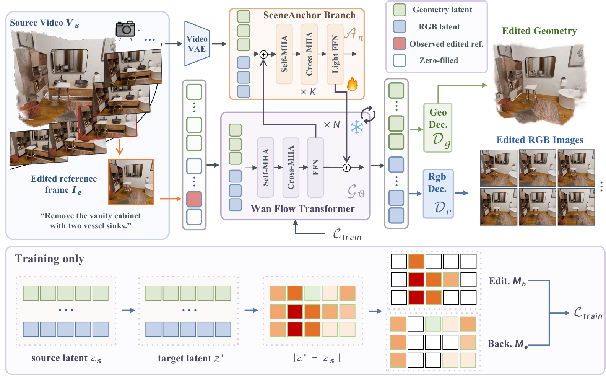
Dataset
SceneEdit3D provides paired scene-level edits with renderer-side 3D supervision for training and standardized evaluation.
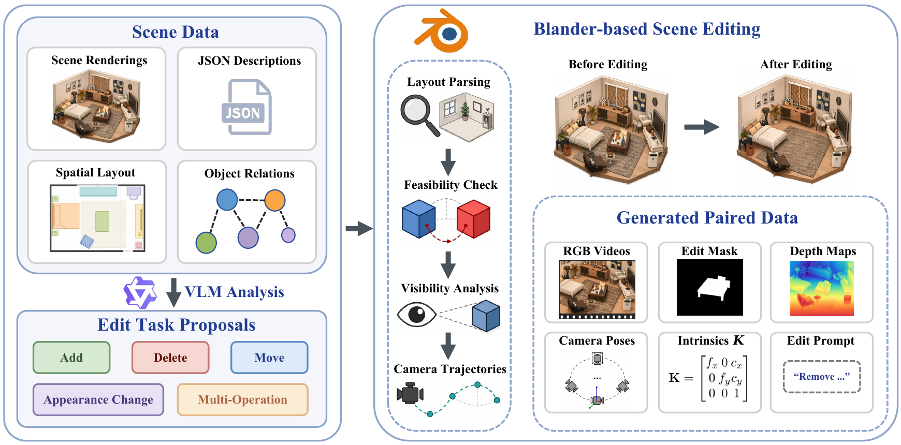
Dataset Samples
Each sample pairs source/edited videos with semi-transparent mask overlays, the example edit prompt, and source/edited 3D point-cloud previews.
Quantitative Results
We evaluate edit fidelity and background preservation with region-aware PSNR/LPIPS, and measure 3D structure against renderer-provided edited geometry.
Best Second-best
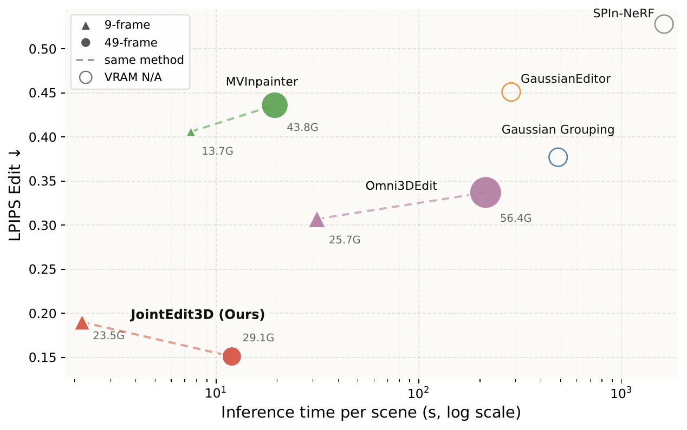
Delete Edit Region
Values are reported as PSNR ↑ / LPIPS ↓.
| Method | SceneEdit3D-Bench PSNR ↑ / LPIPS ↓ | 360-USID PSNR ↑ / LPIPS ↓ |
|---|---|---|
| SPIn-NeRF | 19.20 / 0.528 | 15.89 / 0.4826 |
| Gaussian Grouping | 20.41 / 0.377 | 16.67 / 0.4241 |
| GScream | 20.38 / 0.449 | 14.37 / 0.5725 |
| GaussianEditor | 20.26 / 0.451 | 16.23 / 0.3975 |
| MVInpainter | 21.37 / 0.406 | 15.60 / 0.5677 |
| Omni-3DEdit | 24.86 / 0.307 | 17.78 / 0.3655 |
| JointEdit3D | 31.92 / 0.151 | 18.57 / 0.3426 |
3D Geometry Quality
Point-cloud metrics against renderer-provided edited geometry.
| Method | 3D Source | Accuracy ↓ | Completeness ↓ | CD ↓ | F-score ↑ |
|---|---|---|---|---|---|
| GT RGB + VGGT | VGGT recon. | 0.0724 | 0.0950 | 0.0837 | 0.9619 |
| SEVA + VGGT | VGGT recon. | 0.1433 | 0.2244 | 0.1839 | 0.8722 |
| Omni-3DEdit + VGGT | VGGT recon. | 0.1165 | 0.1313 | 0.1239 | 0.9143 |
| JointEdit3D RGB + VGGT | VGGT recon. | 0.0891 | 0.1211 | 0.1051 | 0.9357 |
| JointEdit3D | Joint output | 0.1153 | 0.0886 | 0.1020 | 0.9702 |
Operation-wise Region Metrics
Average PSNR / LPIPS over Delete, Add, Move, Appearance, and Multi-op on SceneEdit3D-Bench.
| Region | Method | Delete | Add | Move | Appearance | Multi-op | Average |
|---|---|---|---|---|---|---|---|
| Bg. | SEVA | 17.89 / 0.421 | 17.74 / 0.426 | 17.69 / 0.411 | 19.00 / 0.378 | 17.54 / 0.445 | 17.93 / 0.418 |
| Bg. | MVInpainter | 33.57 / 0.080 | 33.64 / 0.076 | 30.97 / 0.081 | 33.76 / 0.073 | 30.06 / 0.091 | 32.40 / 0.080 |
| Bg. | Omni-3DEdit | 25.00 / 0.215 | 24.24 / 0.217 | 24.40 / 0.210 | 25.88 / 0.190 | 23.81 / 0.235 | 24.65 / 0.214 |
| Bg. | JointEdit3D | 32.62 / 0.079 | 32.59 / 0.081 | 31.22 / 0.069 | 33.80 / 0.059 | 30.84 / 0.095 | 32.33 / 0.077 |
| Edit | SEVA | 23.39 / 0.399 | 15.92 / 0.523 | 17.87 / 0.450 | 17.50 / 0.464 | 16.93 / 0.496 | 18.72 / 0.465 |
| Edit | MVInpainter | 21.37 / 0.406 | 20.04 / 0.362 | 16.99 / 0.437 | 18.94 / 0.349 | 17.92 / 0.423 | 19.05 / 0.392 |
| Edit | Omni-3DEdit | 24.86 / 0.307 | 20.63 / 0.293 | 18.55 / 0.377 | 20.92 / 0.230 | 17.03 / 0.461 | 21.10 / 0.323 |
| Edit | JointEdit3D | 31.92 / 0.151 | 23.88 / 0.195 | 23.19 / 0.244 | 27.67 / 0.115 | 23.77 / 0.263 | 26.63 / 0.187 |
JointEdit3D Inference Demo Cases
Additional Results
More paper results are shown below.
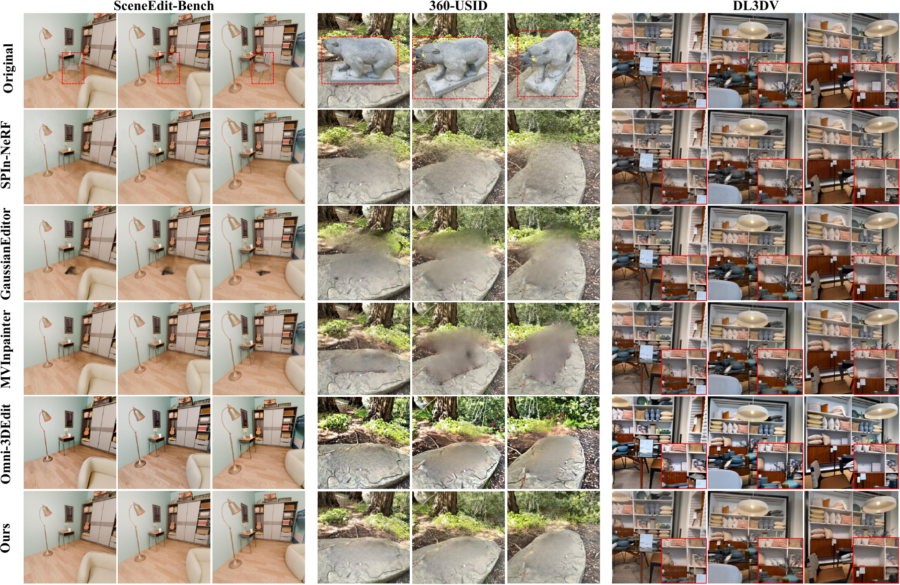
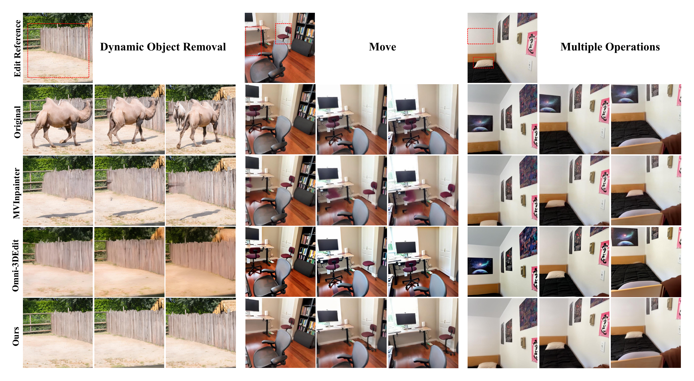
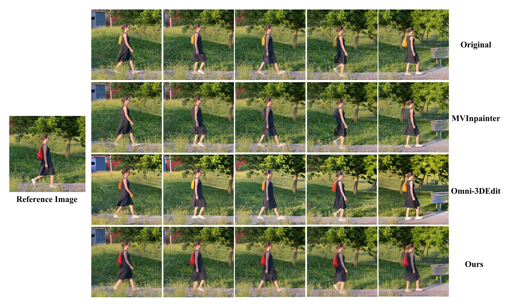
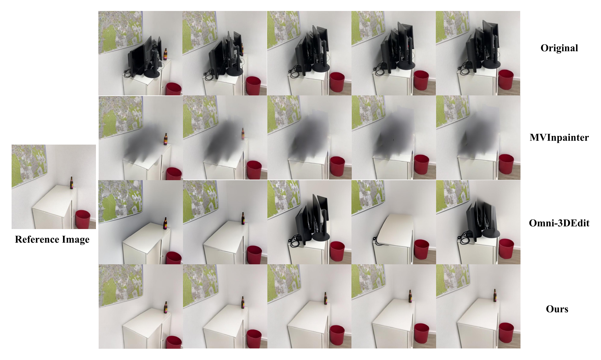
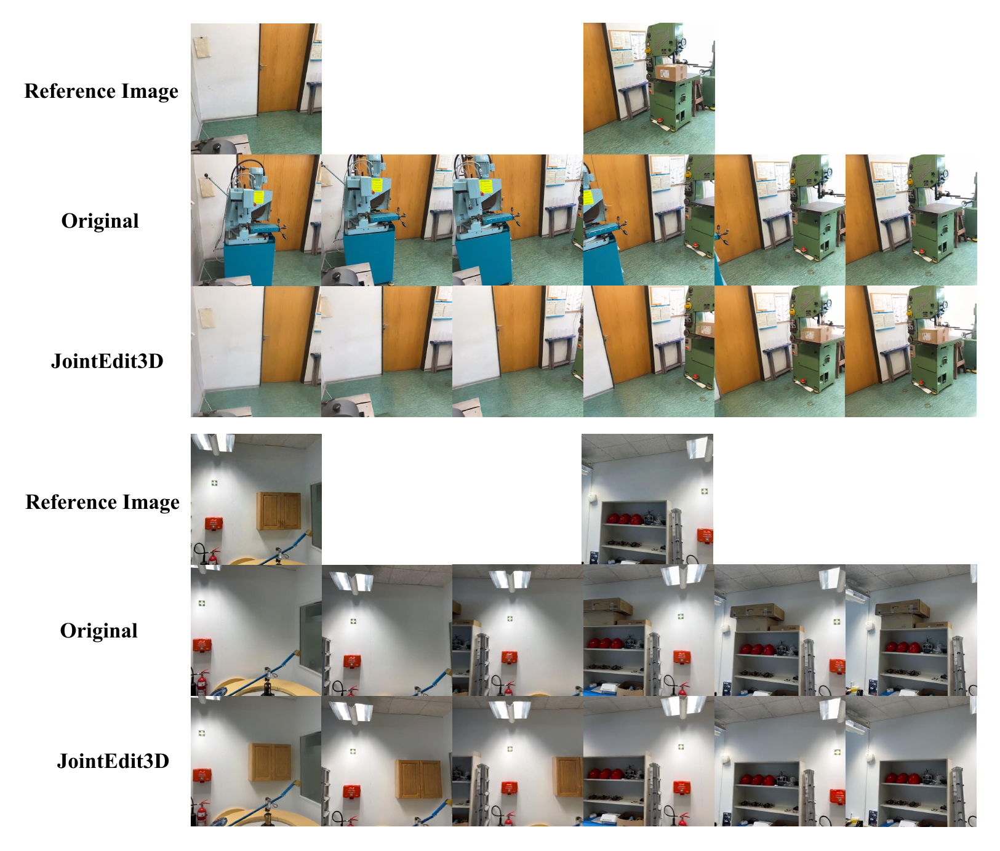
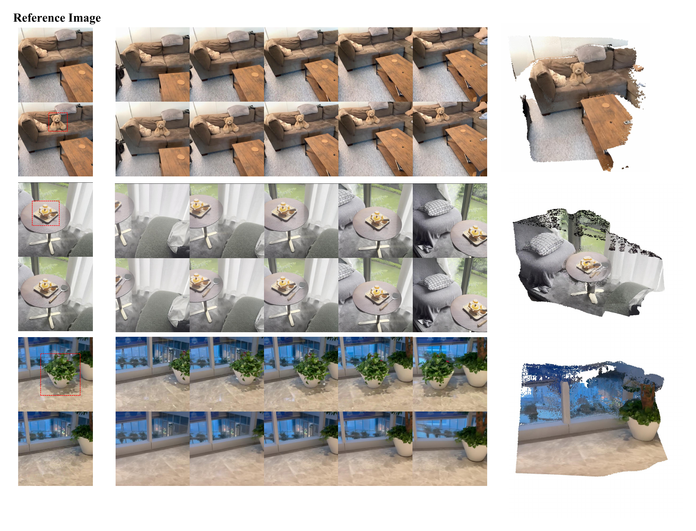
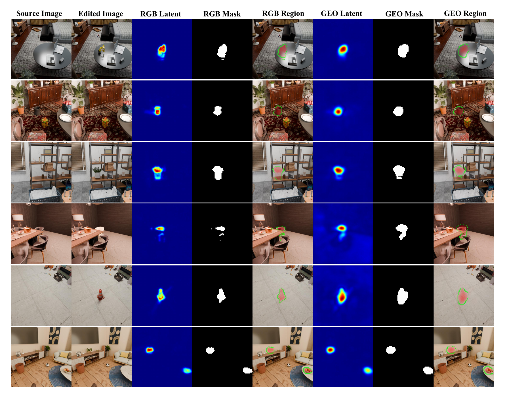
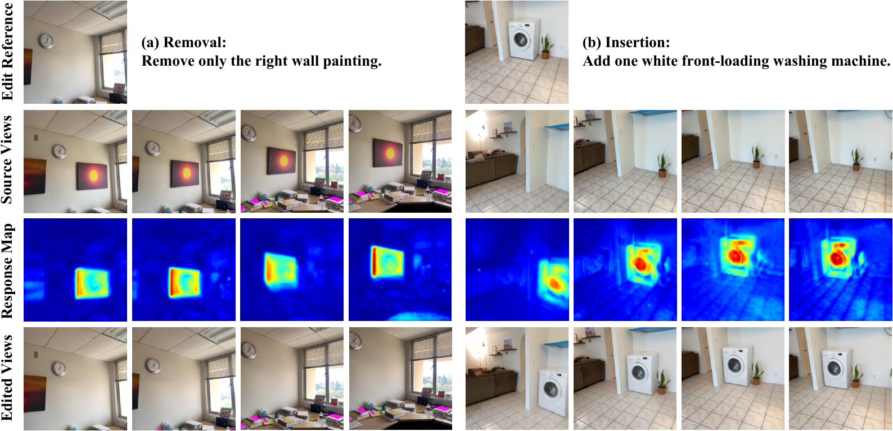
Citation
@article{zhu2026jointedit3d,
title={JointEdit3D: Feed-Forward 3D Scene Editing in a Unified Latent Space},
author={Zhu, Xinnan and Xu, Ruijie and Ying, Jiayu and Dong, Daoguo and Xu, Jiachen and Xie, Yuan and Tan, Xin},
journal={arXiv preprint},
year={2026}
}